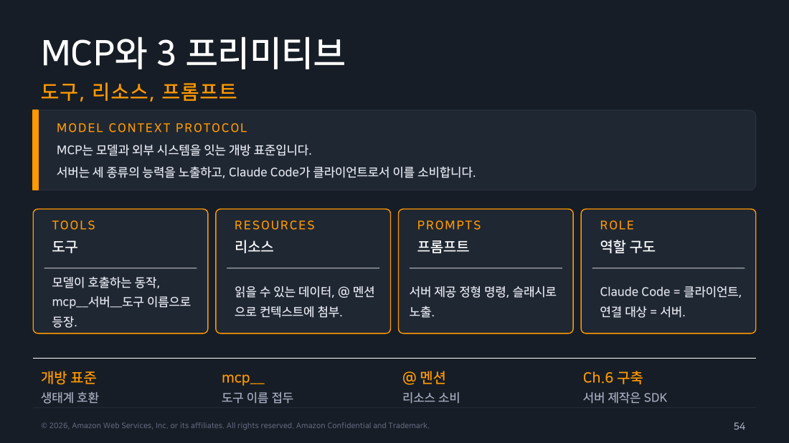
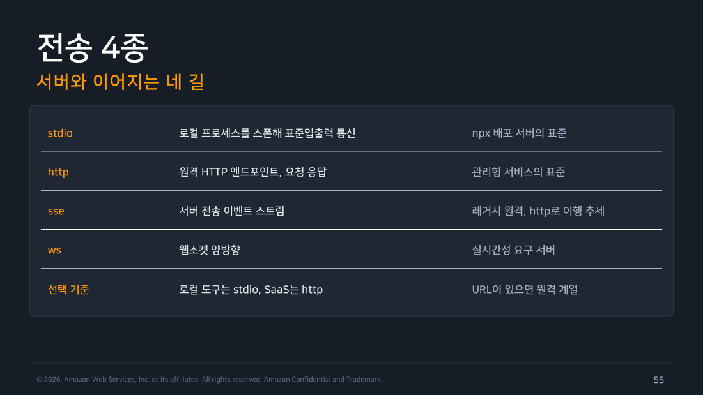
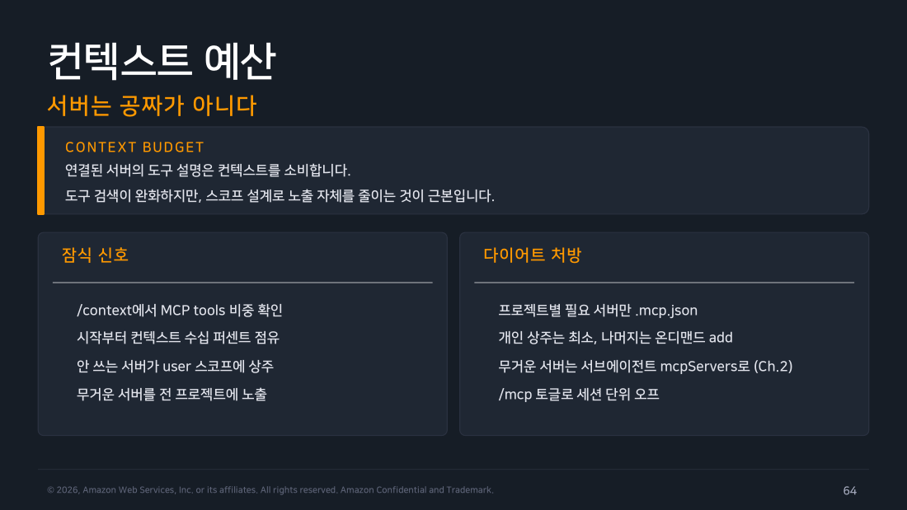

Part 5 — MCP 구성¶
한 줄 요약¶
MCP(Model Context Protocol)는 Claude Code를 외부 시스템에 연결하는 개방 표준입니다. 문법은 3가지 프리미티브(도구·리소스·프롬프트) × 4가지 전송(stdio·http·sse·ws) × 3가지 스코프(local·project·user)로 요약됩니다.
왜 알아야 하나¶
지금까지 다룬 Settings·Permissions·Hooks·Command·Skill은 전부 Claude Code 안에서 벌어지는 일을 조율하는 도구였습니다. MCP는 여기서 한 걸음 더 나가 Claude Code를 바깥 세계(GitHub, Slack, 사내 위키, 데이터베이스)와 잇는 통로입니다.
1. MCP 서버 하나로 할 수 있는 세 가지¶
GitHub MCP 서버를 연결했다고 해봅시다. 이런 게 가능해집니다.
- "이 저장소 열린 이슈 보여줘" → 도구 하나를 호출
@github:issue://123읽고 도와줘 → 이슈 내용을 리소스로 첨부/mcp__github__pr_review 123→ 서버가 미리 만들어둔 프롬프트 양식 사용
즉 MCP 서버 하나가 노출할 수 있는 능력은 도구(Tools)·리소스(Resources)·프롬프트(Prompts) 세 가지입니다. 이를 3 프리미티브라고 부릅니다. Claude Code는 이걸 소비하는 클라이언트 역할을 합니다. 도구는 mcp__서버__도구 형식의 이름으로 등장하는데, Part 2에서 배운 권한 규칙 지정자와 같은 이름 체계입니다.
서버를 직접 만드는 법은 Agent SDK와 6주차에서 다루므로, 이 파트는 이미 있는 서버를 연결해 쓰는 관점에 집중합니다.

▲ 교재 슬라이드 54 — MCP와 3 프리미티브
2. 전송 4종¶
서버와 이어지는 방식은 네 가지입니다. stdio는 로컬 프로세스를 스폰해 표준입출력으로 통신하며 npx로 배포되는 서버의 표준 방식입니다. http는 원격 HTTP 엔드포인트로 관리형 서비스의 표준입니다. sse(서버 전송 이벤트)는 폐지 예정(deprecated)이라 http로 이행하는 추세입니다. ws(웹소켓)는 claude mcp add --transport가 아니라 .mcp.json이나 mcp add-json으로만 구성하며 OAuth 인증도 지원하지 않습니다. 대략 "로컬 도구는 stdio, SaaS는 http"로 기억하면 됩니다.
# stdio: -- 뒤가 실행 명령
$ claude mcp add playwright -- npx -y @playwright/mcp@latest
# 원격: --transport로 지정
$ claude mcp add --transport http github https://api.githubcopilot.com/mcp/

▲ 교재 슬라이드 55 — 전송 4종
3. 스코프 3종 — 상황별로 고르기¶
어디에 저장할지도 3가지인데, 상황별로 골라보면 쉽습니다.
- 나 혼자 잠깐 테스트해볼 때 →
local(기본값).~/.claude.json의 프로젝트별 항목에 저장, 나만 씁니다. - 팀 전체가 같이 써야 할 때 →
project. 저장소 루트의.mcp.json에 저장, 커밋해서 공유합니다. - 내 모든 프로젝트에서 항상 쓰고 싶을 때 →
user.~/.claude.json의 전역 항목입니다.
$ claude mcp add -s project sentry -- npx -y @sentry/mcp
$ claude mcp list / get <name> / remove <name>
동명 서버가 여러 스코프에 있으면 Part 1과 같은 local > project > user 순으로 우선합니다. 다만 project 스코프 서버는 저장소가 임의 명령을 실행하는 서버를 몰래 심을 수 있다는 위험 때문에 처음 쓸 때 별도의 승인 절차를 거칩니다(Lab 3에서 실제로 "pending approval" 상태를 봤습니다).
.mcp.json으로 팀 표준을 커밋할 때는 ${VAR}로 환경변수를 확장하고 ${VAR:-기본값} 문법으로 미설정 시 폴백을 지정할 수 있습니다. 토큰이나 키는 절대 이 파일에 직접 적지 말고 환경변수로 외부화해야 합니다.
{ "mcpServers": {
"corp-wiki": {
"type": "http",
"url": "https://wiki-mcp.corp.example/mcp",
"headers": { "Authorization": "Bearer ${WIKI_TOKEN}" }
},
"db": {
"type": "stdio",
"command": "npx", "args": ["-y", "@corp/db-mcp"],
"env": { "DB_HOST": "${DB_HOST:-localhost}" }
} } }
4. 연결 흐름 — 추가 → 인증 → 사용¶
원격 http 서버는 대개 OAuth(비밀번호를 직접 넘기지 않고 브라우저 로그인으로 접근 권한만 위임하는 표준 인증 방식)로 인증합니다. 서버를 추가하면 처음엔 미인증 상태입니다. /mcp에서 서버를 골라 Authenticate를 실행하면 브라우저가 열려 로그인과 권한 동의를 거칩니다. 그 뒤 토큰이 저장되고 이후로는 자동 갱신됩니다.
직접 해보고 알게 된 것 — 모든 원격 서버가 OAuth를 지원하지는 않는다
교재 예시 그대로 claude mcp add --transport http github https://api.githubcopilot.com/mcp/를 추가하고 claude mcp login github으로 OAuth를 시도했더니 "Incompatible auth server: does not support dynamic client registration" 오류가 났습니다. 공식문서(code.claude.com/docs/en/mcp)를 확인해보니 GitHub의 이 원격 서버는 애초에 OAuth가 아니라 개인 액세스 토큰(PAT)을 헤더로 직접 넘기는 방식을 쓰라고 안내하고 있었습니다.
claude mcp add --transport http github https://api.githubcopilot.com/mcp/ \
--header "Authorization: Bearer YOUR_GITHUB_PAT"
claude mcp list에서 바로 ✔ Connected가 떴습니다. 실제로 "이 저장소의 기본 브랜치가 뭐야"라고 물으니 mcp__github__* 도구가 호출되어 정확한 저장소 정보(브랜치명, has_pages 여부 등)를 가져왔습니다. 즉 "원격 서버는 다 OAuth"라고 일반화하면 안 됩니다. 서버마다 인증 서버 구현이 다를 수 있어 실패하면 그 서버의 문서를 따로 확인해야 합니다.
일단 연결되면 소비 문법은 프리미티브별로 다릅니다. 도구는 그냥 자연어로 요청하면 내부적으로 mcp__github__list_issues 같은 이름으로 호출됩니다. 리소스는 @corp-wiki:onboarding/backend처럼 @서버:경로 형식으로 멘션하면 되고 서버가 제공하는 프롬프트는 /mcp__github__pr_review 123처럼 슬래시 명령으로 노출됩니다. 권한 규칙(Part 2)에서는 mcp__github(서버 전체)나 개별 도구 이름으로 세밀하게 통제할 수 있습니다.
/mcp 관리 UI는 서버 목록·연결 상태(connected/failed)·도구 수·인증 상태를 한 화면에서 보여주는 상황판입니다. 서버가 안 보이거나 이상하게 동작하면 가장 먼저 열어볼 곳입니다.
5. claude.ai 커넥터 — 웹에서 연결한 서버가 CLI에도 등장¶
claude.ai는 브라우저에서 쓰는 웹 버전 Claude입니다. 거기서 예를 들어 Google Drive 연동을 설정해두면 터미널에서 Claude Code를 쓸 때도 아무 설정 없이 그 연결이 자동으로 나타납니다. 실제로 스크래치 프로젝트에서 claude mcp list를 돌렸을 때도 따로 설정하지 않은 "Google Drive" 커넥터가 이미 떠 있었습니다.
이 자동 동기화가 부담스러우면 프로젝트에 disableClaudeAiConnectors를 커밋해 저장소 단위로 거부할 수 있습니다. 여러 소스에서 이 값이 섞여 있으면 true가 항상 우선 적용됩니다(한 번 차단되면 다른 소스의 false로 재개방이 안 됨). 조직은 managed-mcp.json으로 커넥터를 기본 배제하고 allowAll 계열 키로 예외를 병행할 수 있습니다.
6. 도구 검색(Tool Search)과 컨텍스트 예산¶
서버가 늘어날수록 각 서버의 도구 설명(스키마)이 세션 시작 컨텍스트를 잠식합니다. 도구 검색은 이 문제를 "설명을 다 올려두는 대신 검색 인덱스만 두고, 실제로 필요한 도구의 정의만 그때그때 불러오는" 방식으로 완화하며 기본적으로 항상 켜져 있습니다(도구 수가 어떤 임계치를 넘어야 전환되는 게 아니라, 처음부터 모든 MCP 도구가 지연 로드 대상입니다). 예외는 ANTHROPIC_BASE_URL이 서드파티 프록시를 가리키거나, 도구 검색을 지원하지 않는 구형 모델·일부 클라우드 배포 조합처럼 특수한 경우뿐입니다. 이때는 도구 정의가 처음부터(upfront) 로드됩니다. 아래 직접 해보기에서 이걸 숫자로 직접 확인했습니다.
/context로 MCP 도구가 컨텍스트에서 차지하는 비중을 직접 확인할 수 있습니다. 처방은 명확합니다. 프로젝트별로 정말 필요한 서버만 .mcp.json에 두고 개인 상주(user 스코프)는 최소로 유지하며 무거운 서버는 서브에이전트의 mcpServers로 격리하거나(2주차 복습) /mcp 토글로 세션 단위로 껐다 켤 수 있습니다.

▲ 교재 슬라이드 64 — 컨텍스트 예산
직접 해보기 — Lab 3: MCP 서버 연결 + /context 전후 비교¶
교재가 "도구 검색이 컨텍스트 잠식을 완화한다"고 설명한 걸 실측으로 확인했습니다. 스크래치 프로젝트에서 /context로 기준선을 먼저 잡았습니다.
$ claude -p "/context" --output-format json
## Context Usage
**Tokens:** 32.9k / 967k (3%)
| Category | Tokens | Percentage |
| System prompt | 9.1k | 0.9% |
| System tools | 18.1k | 1.9% |
| System tools (deferred) | 15.3k | 1.6% |
| ...
이 상태에서 교재 예시 그대로 Playwright MCP 서버를 로컬 스코프로 연결했습니다.
$ claude mcp add playwright -- npx -y @playwright/mcp@latest
Added stdio MCP server playwright with command: npx -y @playwright/mcp@latest to local config
$ claude mcp list
claude.ai Google Drive: https://drivemcp.googleapis.com/mcp/v1 - ✔ Connected
playwright: npx -y @playwright/mcp@latest - ✔ Connected
연결 후 /context를 다시 실행했습니다.
$ claude -p "/context" --output-format json
## Context Usage
**Tokens:** 32.9k / 967k (3%)
| Category | Tokens | Percentage |
| System prompt | 9.1k | 0.9% |
| System tools | 18.1k | 1.9% |
| MCP tools (deferred) | 5.9k | 0.6% |
| System tools (deferred) | 15.3k | 1.6% |
| ...
### MCP Tools
| Tool | Server | Tokens |
| mcp__playwright__browser_click | playwright | 317 |
| mcp__playwright__browser_take_screenshot | playwright | 545 |
| ... (총 23개 도구) |
직접 해보고 알게 된 것 — 23개 도구를 붙였는데 총 컨텍스트가 그대로였다
Playwright MCP는 도구 23개를 노출합니다. "도구 하나에 스키마 수백 토큰이면 23개면 못해도 수천 토큰은 늘겠지"라고 예상했는데, 결과는 달랐습니다.
- 관찰값 — 연결 전후 Tokens: 32.9k / 967k (3%)라는 총량 표시가 완전히 동일했습니다. 대신 MCP tools (deferred)라는 새 카테고리가 5.9k(0.6%)로 나타났습니다.
- 알 수 있는 것 — 이름 그대로 "지연된(deferred)" 상태로 인덱스만 잡혀 있고 실제 도구 정의가 세션 컨텍스트에 얹힌 게 아닙니다. 서버를 몇 개 붙이든 곧바로 컨텍스트가 늘지는 않으니 필요 이상으로 서버 추가를 겁낼 필요는 없습니다.
- 이번 실습 범위 밖 — 실제로 그 도구들을 호출하기 시작하면 그때 정의가 로드되며 비용이 발생할지는 확인하지 못했습니다.
테스트가 끝난 뒤 claude mcp remove playwright로 정리했습니다.
http 전송 서버 연결도 이어서 확인했습니다. 위 OAuth 경고에서 정리한 대로 PAT 헤더 방식으로 GitHub 서버를 다시 등록하자 claude mcp list에서 ✔ Connected가 떴습니다. 실제로 공개 저장소(jinjuchoo/claude-code-study-docs)의 기본 브랜치와 파일 목록을 물어보니 mcp__github__* 도구가 호출되어 정확한 실제 데이터를 가져왔습니다. 테스트에 쓴 fine-grained PAT는 확인 직후 GitHub 쪽에서 바로 폐기했습니다.
흔한 오해 바로잡기¶
"MCP 서버를 연결하면 그 즉시 컨텍스트가 도구 수만큼 늘어난다" — 도구 검색이 기본적으로 항상 켜져 있어 정의를 지연 로드하므로 서버를 붙이는 행위 자체가 곧바로 컨텍스트를 크게 늘리지는 않습니다. 다만 실제로 그 도구들을 자주 호출하는 세션에서는 다른 양상이 나올 수 있습니다. 서드파티 프록시나 일부 구형 모델 조합에서는 애초에 지연 로드가 안 될 수도 있습니다.
정리¶
MCP는 3가지 프리미티브·4가지 전송·3가지 스코프라는 비교적 단순한 문법 위에서 Claude Code를 외부 시스템과 잇습니다. 팀 표준은 .mcp.json으로 커밋하고 비밀은 환경변수로 외부화합니다. 원격 서버 인증은 기본적으로 /mcp의 OAuth 위임에 맡기되 GitHub처럼 예외인 서버도 있다는 걸 실측으로 확인했습니다. Lab 3에서 확인했듯 도구 검색 덕분에 서버를 늘리는 것 자체가 곧바로 컨텍스트 예산을 위협하지는 않습니다. 그렇다고 무제한으로 서버를 쌓아도 된다는 뜻은 아니라서 스코프 설계로 노출 범위를 관리하는 습관은 여전히 유효합니다. 다음 파트는 이 연결이 곧 신뢰 경계라는 관점에서 서드파티 서버를 어떻게 안전하게 다룰지를 다룹니다.
출처¶
- Claude Code Deep Dive Workshop — Chapter 4 / Part 5: MCP 구성 (2026.07 판, s54~65)
- 공식 문서: Connect to MCP servers, Connect Claude Code to tools via MCP